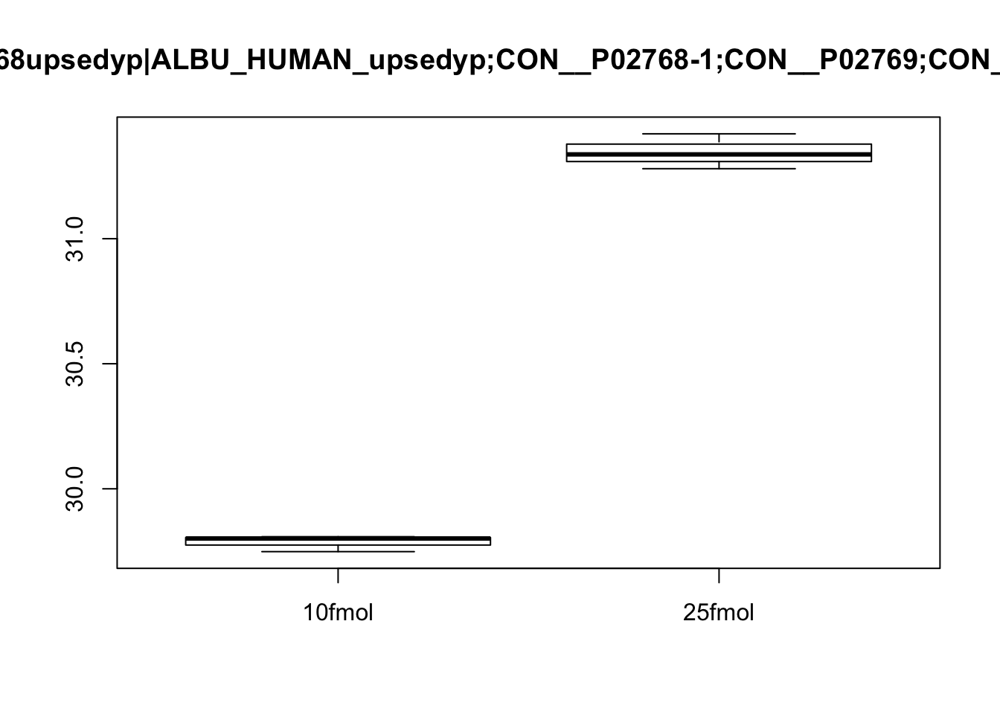
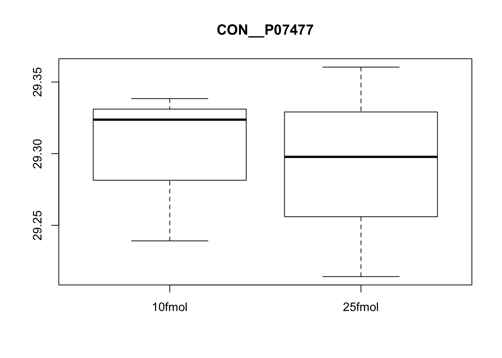
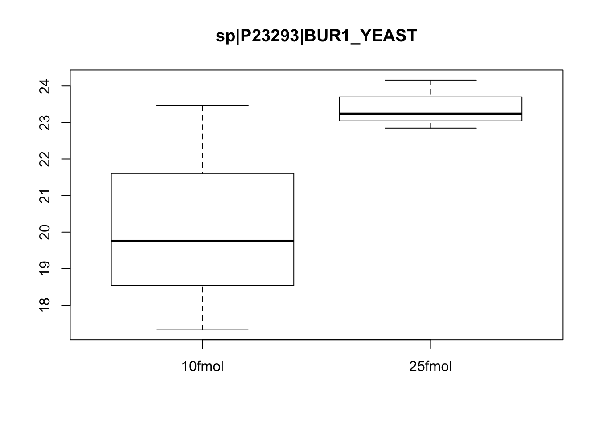
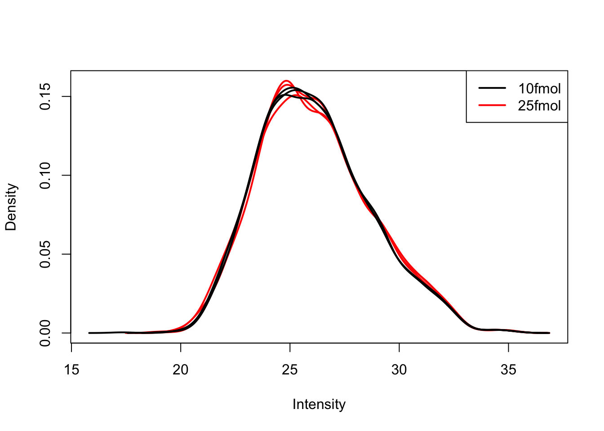
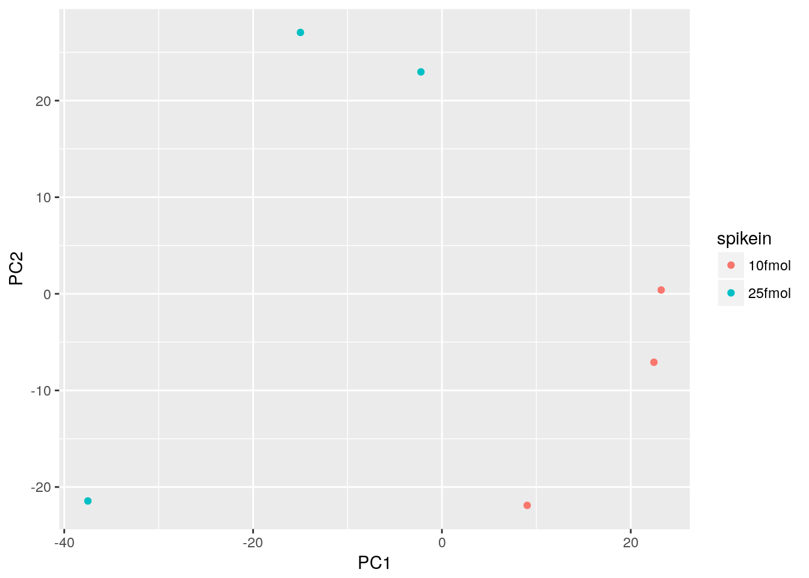
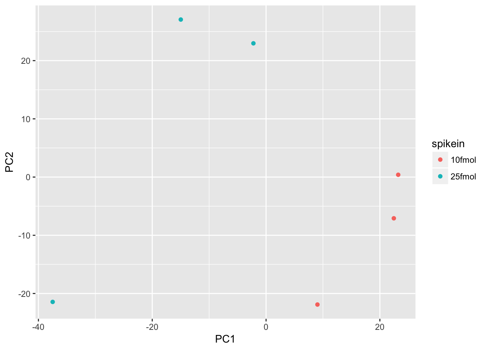
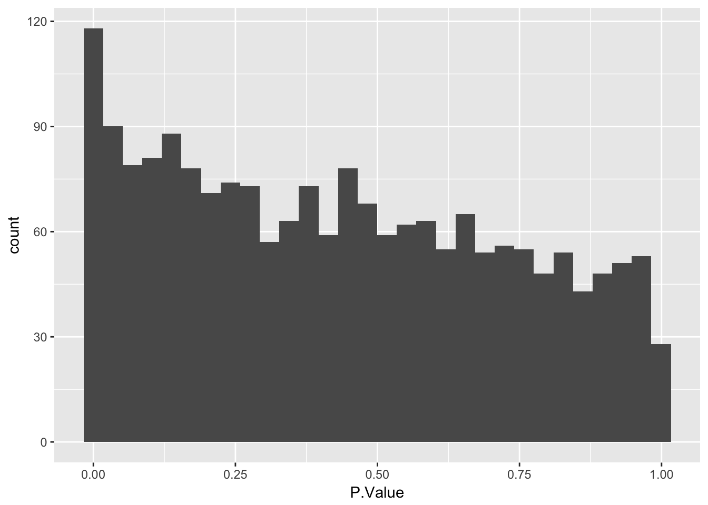
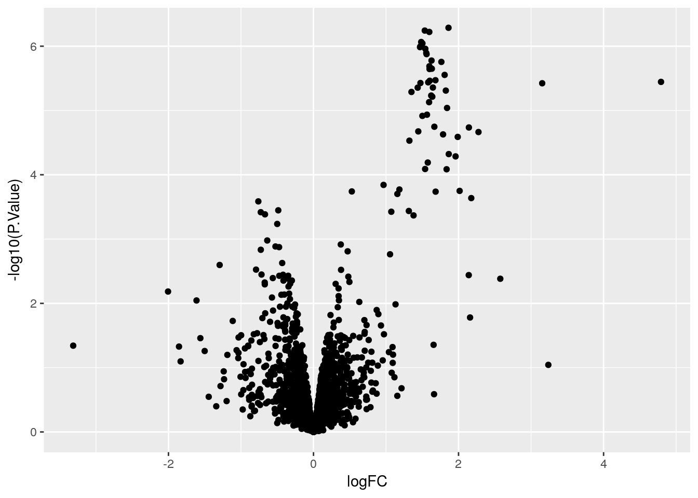

Last updated: 2018-02-16
Code version: 4d75cfb
Analyze proteomics data set that compares 2 groups.
library("Biobase")
library("ggplot2")
library("limma")Warning: package 'limma' was built under R version 3.3.3eset <- readRDS("../data/ch02.rds")Describe the scientific question, the experimental design, and the data collected for the 2-group study. Introduce the ExpressionSet object that contains the data. Review the quality control procedures covered in past Bioconductor courses (specifically comparing distributions and PCA).
Create boxplots of a few pre-selected genes (one clearly DE, one clearly not, and one in between). Use pData to select the phenotype variables and exprs to access the expression data.
boxplot(exprs(eset)[3, ] ~ pData(eset)$spikein, main = fData(eset)$protein[3])
boxplot(exprs(eset)[5, ] ~ pData(eset)$spikein, main = fData(eset)$protein[5])
boxplot(exprs(eset)[463, ] ~ pData(eset)$spikein, main = fData(eset)$protein[463])
Use limma::plotDensities to confirm that the distribution of gene expression levels is consistent across the samples.
plotDensities(exprs(eset), legend = FALSE)
Use prcomp to compute principal components and then plot PC1 vs. PC2 to confirm that the biological effect is the main source of variation.
pca <- prcomp(t(exprs(eset)), scale. = TRUE)
plot(pca)
d <- data.frame(pData(eset), pca$x)
ggplot(d, aes(x = PC1, y = PC2, color = spikein)) +
geom_point()
Describe the standard limma workflow. Describe the 2 main techniques for constructing the linear model: treatment-contrasts versus group-means parametrizations.
Use model.matrix to create a linear model with an intercept and one binary variable. Use colSums to reason about how this relates to the samples (e.g. the intercept represents the mean across samples because it is 1 for every sample).
design <- model.matrix(~spikein, data = pData(eset))
colSums(design) (Intercept) spikein25fmol
6 3 Use limma::lmFit, limma::eBayes, and limma::decideTests to fit and test the model.
fit <- lmFit(eset, design)
head(fit$coefficients) (Intercept) spikein25fmol
1 21.19598 0.134121520
2 32.48541 -0.004568881
3 29.78624 1.559134985
4 25.25850 0.706384928
5 29.30042 -0.009631149
6 22.12669 1.089862564fit <- eBayes(fit)
results <- decideTests(fit[, 2])
summary(results) spikein25fmol
-1 9
0 1879
1 56Use model.matrix to create a linear model with two binary variables (and no intercept). Use colSums to reason about how this relates to the samples (e.g. each of the terms represents the mean for its group of samples because it is the only term that is 1 for those samples). Use limma::makeContrasts to create a contrasts matrix based on this new linear model.
design <- model.matrix(~0 + spikein, data = pData(eset))
colSums(design)spikein10fmol spikein25fmol
3 3 cont_mat <- makeContrasts(spike_effect = spikein25fmol - spikein10fmol,
levels = design)
cont_mat Contrasts
Levels spike_effect
spikein10fmol -1
spikein25fmol 1Use limma::lmFit, limma::contrasts.fit, limma::eBayes, and limma::decideTests to fit and test the model. Confirm that the results are identical to the more traditional linear modelling approach used previously.
fit <- lmFit(eset, design)
head(fit$coefficients) spikein10fmol spikein25fmol
1 21.19598 21.33010
2 32.48541 32.48084
3 29.78624 31.34538
4 25.25850 25.96488
5 29.30042 29.29079
6 22.12669 23.21656fit2 <- contrasts.fit(fit, contrasts = cont_mat)
head(fit2$coefficients) Contrasts
spike_effect
1 0.134121520
2 -0.004568881
3 1.559134985
4 0.706384928
5 -0.009631149
6 1.089862564fit2 <- eBayes(fit2)
results <- decideTests(fit2)
summary(results) spike_effect
-1 9
0 1879
1 56Describe how to access the results with topTable and describe the columns. Demonstrate some common visualizations.
Use geom_histogram to plot P.Value column from limma::topTable. Ask question to confirm they understand that the p-value distribution corresponds to the number of differentially expressed genes identified.
topTable(fit2) protein
33 P06396upsedyp|GELS_HUMAN_upsedyp;CON__Q3SX14
34 P06732upsedyp|KCRM_HUMAN_upsedyp
29 P02787upsedyp|TRFE_HUMAN_upsedyp
53 P68871upsedyp|HBB_HUMAN_upsedyp;CON__Q3SX09;CON__P02070
30 P02788upsedyp|TRFL_HUMAN_upsedyp;CON__Q29443;CON__Q0IIK2
39 P10599upsedyp|THIO_HUMAN_upsedyp
15 P00709upsedyp|LALBA_HUMAN_upsedyp
42 P15559upsedyp|NQO1_HUMAN_upsedyp
11 O00762upsedyp|UBE2C_HUMAN_upsedyp
3 P02768upsedyp|ALBU_HUMAN_upsedyp;CON__P02768-1;CON__P02769;CON__Q3SZ57
logFC AveExpr t P.Value adj.P.Val B
33 1.861560 29.47426 27.52384 5.176104e-07 0.0002584916 7.311601
34 1.534331 29.14056 27.01624 5.719561e-07 0.0002584916 7.221913
29 1.596815 30.67280 26.77212 6.004868e-07 0.0002584916 7.177897
53 1.485236 28.84136 25.03177 8.609292e-07 0.0002584916 6.846476
30 1.502014 31.02911 24.79491 9.059136e-07 0.0002584916 6.798845
39 1.473717 28.31979 24.30523 1.008053e-06 0.0002584916 6.698332
15 1.468805 28.42487 24.18606 1.034938e-06 0.0002584916 6.673445
42 1.541838 27.32908 23.91733 1.098739e-06 0.0002584916 6.616701
11 1.554906 28.71986 23.25450 1.277099e-06 0.0002584916 6.472931
3 1.559135 30.56581 23.07978 1.329689e-06 0.0002584916 6.434105stats <- topTable(fit2, number = nrow(fit2), sort.by = "none")
ggplot(stats, aes(x = P.Value)) +
geom_histogram()`stat_bin()` using `bins = 30`. Pick better value with `binwidth`.
Use geom_point() to plot -log10(P.Value) vs. logFC. Mention limma::volcanoPlot after exercise is completed.
stats$significant <- stats$adj.P.Val < 0.05
ggplot(stats, aes(x = logFC, y = -log10(P.Value), color = significant)) +
geom_point()
sessionInfo()R version 3.3.2 (2016-10-31)
Platform: x86_64-apple-darwin13.4.0 (64-bit)
Running under: OS X Yosemite 10.10.5
locale:
[1] en_US.UTF-8/en_US.UTF-8/en_US.UTF-8/C/en_US.UTF-8/en_US.UTF-8
attached base packages:
[1] parallel stats graphics grDevices utils datasets methods
[8] base
other attached packages:
[1] limma_3.30.13 ggplot2_2.2.1 Biobase_2.34.0
[4] BiocGenerics_0.20.0
loaded via a namespace (and not attached):
[1] Rcpp_0.12.14 knitr_1.18 magrittr_1.5 munsell_0.4.3
[5] colorspace_1.3-2 rlang_0.1.6 stringr_1.2.0 plyr_1.8.4
[9] tools_3.3.2 grid_3.3.2 gtable_0.2.0 git2r_0.21.0
[13] htmltools_0.3.6 yaml_2.1.16 lazyeval_0.2.1 rprojroot_1.3-2
[17] digest_0.6.13 tibble_1.3.3 evaluate_0.10.1 rmarkdown_1.8
[21] labeling_0.3 stringi_1.1.5 scales_0.4.1 backports_1.1.2 This R Markdown site was created with workflowr